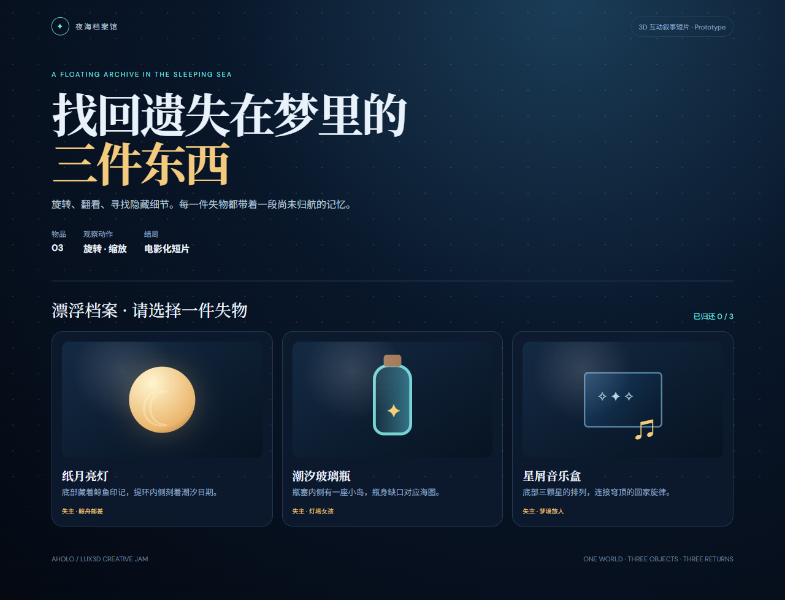
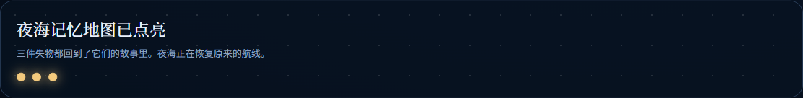
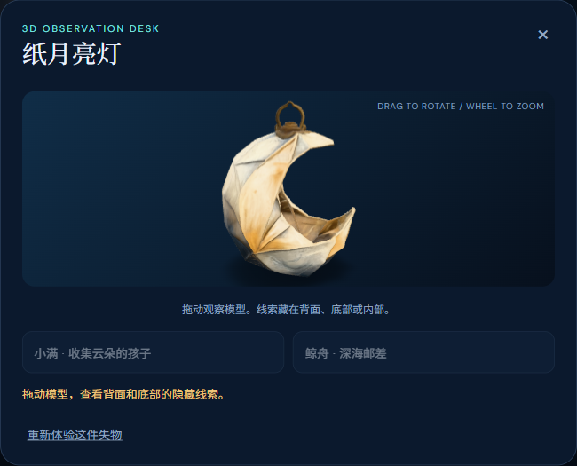
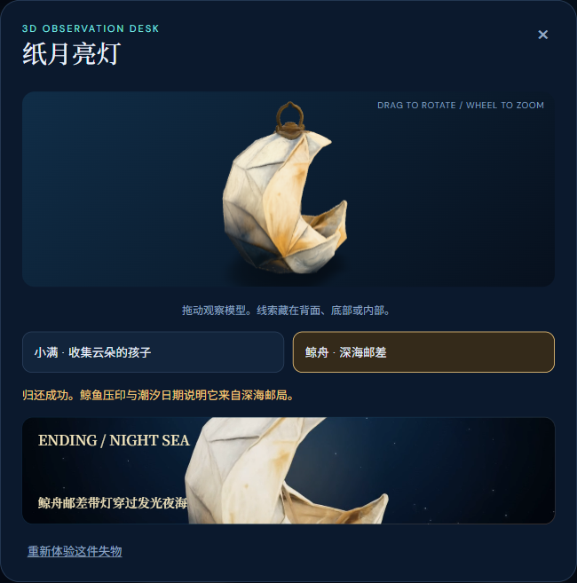
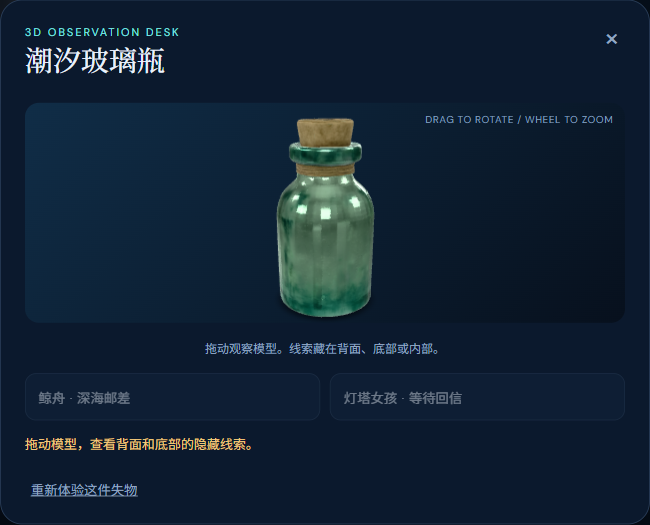
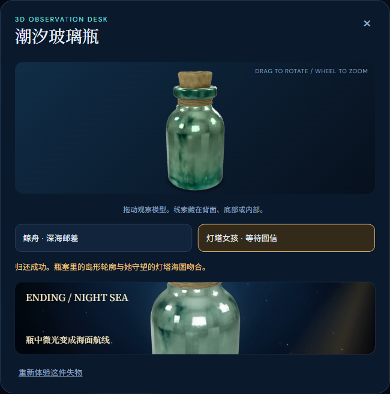
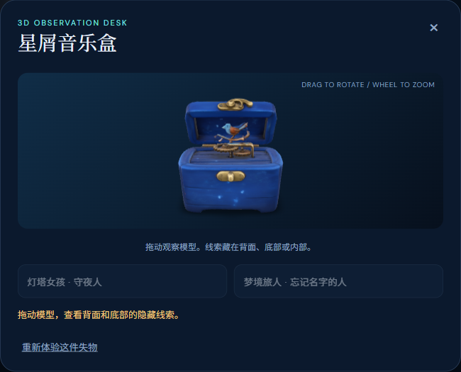
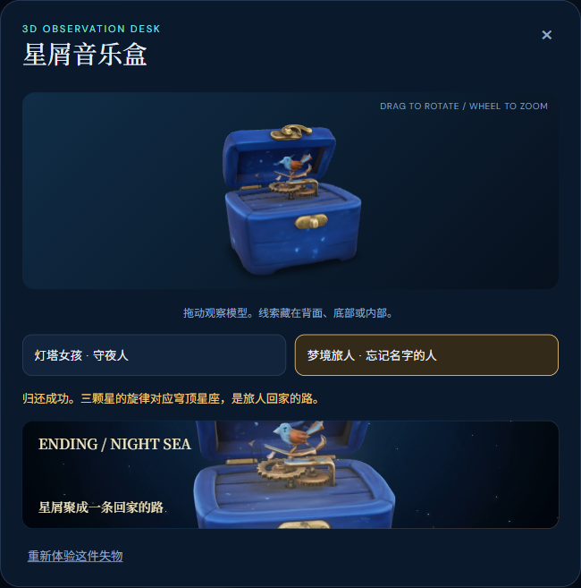

Aholo 全球 3D AI 黑客松参赛作品 · 3D 互动叙事短片
在线 Demo：https://rinkobe.github.io/night-sea-archive/
演示视频：docs/assets/demo-walkthrough.mp4
源代码：https://github.com/RinKobe/night-sea-archive
玩家在漂浮于夜海上的梦境档案馆中，翻看三件由 Aholo Lux3D 生成的遗失物，通过旋转、缩放和寻找藏在背面、底部、内部的细节，推断它们各自属于谁。归还成功后，播放由同一件 GLB 本地渲染的电影化结局短片。
《梦境失物招领：夜海档案馆》是一款运行在浏览器中的 3D 互动叙事短片。作品把“3D 模型”从展示对象变成叙事媒介：线索不在文字里，而在物体真实的背面、底部和内部。玩家必须真正观察三维形体，才能推进故事。
作品参加 Aholo 全球 3D AI 黑客松。核心 3D 资产全部由 Aholo Lux3D 生成；结局短片由同一份 GLB 在本地渲染，保证网页、模型与视频三者的轮廓、配色和线索标记一致。


| 3D 观察 | 电影化结局 |
|---|---|
 |
 |
| 3D 观察 | 电影化结局 |
|---|---|
 |
 |
| 3D 观察 | 电影化结局 |
|---|---|
 |
 |
三件核心资产均由 Aholo Lux3D 生成，任务记录保存在 aholo-lux3d-task.json。
| 资产 | 生成方式 | Lux3D 任务 ID | 报价积分 | 状态 |
|---|---|---|---|---|
| 纸月亮灯 | 文生 3D | 8325054 | 13 | 成功 |
| 潮汐玻璃瓶 | 文生 3D | 8326675 | — | 成功 |
| 星屑音乐盒 | 文生 3D | 8326700 | — | 成功 |
账户积分快照：3587 credits（生成后记录于任务文件）。
纸月亮灯第一轮使用 stylized cinematic 风格时被平台拒绝：
"failedAttempt": {
"style": "stylized cinematic",
"reason": "unsupported style",
"status": "rejected"
}
随后改用受支持风格重新生成，得到最终 GLB。该记录保留在 aholo-lux3d-task.json 中，作为“提示词迭代 → 资产结果”的过程证据。
纸月亮灯
stylized cinematic 3D prop for an interactive web story, a handmade ivory paper moon lantern shaped like a crescent moon, warm inner glow, delicate folded paper texture, small brass handle, a subtle embossed whale emblem on the underside, readable silhouette from every angle, clean materials, no text, no background, game-ready GLB asset
潮汐玻璃瓶
stylized cinematic 3D prop, a small sea-green translucent glass message bottle from a dream ocean, rounded worn edges, cork stopper, a tiny glowing piece of seaweed floating inside, a hidden island-shaped mark under the stopper, readable silhouette, clean game-ready materials, no text, no background, GLB asset
星屑音乐盒
stylized cinematic 3D prop, a small deep-blue wooden music box covered with subtle star-dust patterns, hinged lid, tiny rotating bird mechanism visible inside, three-star constellation mark on the bottom, soft magical reflections, readable silhouette, clean game-ready materials, no text, no background, GLB asset
model-viewer 加载 GLB，支持旋转、缩放和触摸localStorage 保存已归还物品和地图进度<video> 播放，加载失败时保留 CSS 降级画面Aholo 黑客松中 LuxReal 为可选工具，且比赛仅发放 Aholo Lux3D 积分，未包含 LuxReal 积分。因此本项目采用本地渲染管线完成结局镜头，既保证与网页模型一致，也不额外消耗视频平台积分。
管线：
render/ending.html → model-viewer 加载 GLB + 8 秒电影化运镜 + 夜海粒子 + 字幕
render/record.mjs → Playwright 驱动 Chrome 录制 1280×720 画面
ffmpeg → 转 H.264 MP4，30fps，8 秒
输出：
docs/assets/paper-moon-ending.mp4docs/assets/tide-glass-bottle-ending.mp4docs/assets/stardust-music-box-ending.mp4三段视频均为 1280×720 / 30fps / 8 秒，主体、配色和线索标记与网页中的 GLB 完全一致。
| 项目 | 状态 |
|---|---|
| 三件 Lux3D 资产 | ✅ 全部生成并加载 |
| 3D 旋转 / 缩放观察 | ✅ |
| 隐藏线索与失主判断 | ✅ 三件物品各一轮 |
| 三段结局短片 | ✅ 本地渲染，自动播放 |
| 记忆地图与进度保存 | ✅ localStorage |
| 80 秒完整演示录屏 | ✅ docs/assets/demo-walkthrough.mp4 |
| 端到端自动化测试 | ✅ 三件物品均验证 video readyState=4 |
https://rinkobe.github.io/night-sea-archive/docs/assets/demo-walkthrough.mp4report/report.pdfhttps://github.com/RinKobe/night-sea-archivedocs/assets/*.glbdocs/assets/*-ending.mp4aholo-lux3d-task.json、screenshots/、render/本作品为 Aholo 全球 3D AI 黑客松参赛项目。核心 3D 内容由 Aholo Lux3D 生成；结局短片由同一 GLB 本地渲染。